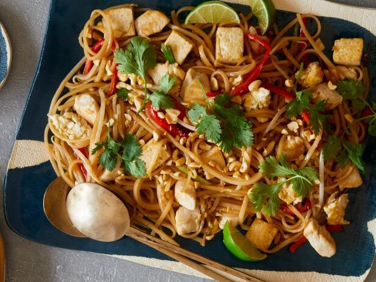

Pad Thai Chicken

This is also 4 Servings
Ingredients
- Rice Noodles (can use another type of noodle but read packet instructions for how to cook)
- 2 Chicken Breasts
- Salt and Pepper
- 3 Medium Red Chilis (Chopped)
- 3 Spring Onions (Chopped)
- 2 Eggs
- Corriander (if I don't have any corriander i substitute for some dried mint)
- 1 tbsp Lemon Juice
- 1 tbsp Brown Sugar
- 2 Cloves of Garlic (Minced)
- 3 tbsp of Fish Sauce
The following ingredients aren't essential but if you can afford them they taste fantastic in this dish
- 60g Cooked Shrimp
- 3 tbsp of Roasted Peanuts (Slightly ground)
- Beansprouts
- Mange tout or Sugar Snap Peas
Method of Cooking
- Soak the rice noodles in hot water for 20 minutes or until cooked
- Heat some oil in a pan and add the two beaten and seasoned eggs to make an omlette. Transfer to a plate and chop into strips and leave to cool
- Heat some oil in the wok and add the chicken, once it is sealed on all sides add the garlic
- Add the spring onions and shrimp (if using) and stir fry for another minute
- Add the chilis, drained noodles, fish sauce, lemon juice, sugar and peanuts and stir fry over a high heat for another minute
- Toss in the bean sprouts, omelet strips, mange tout and stir fry briskly for about 30 seconds
- Toss over coriander and season to taste. Serve piping hot